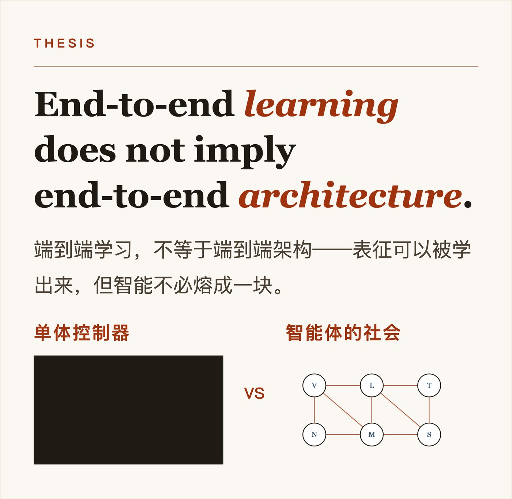
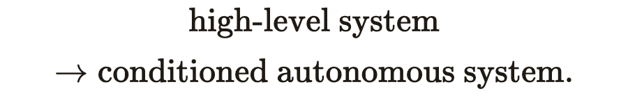
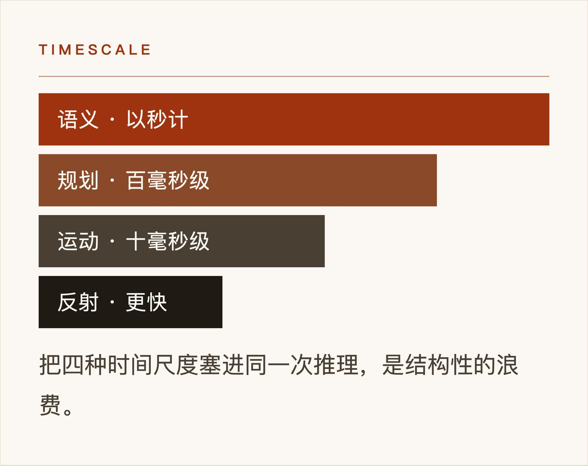
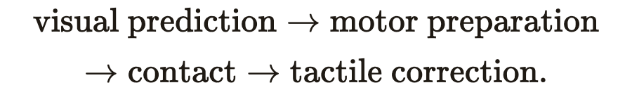
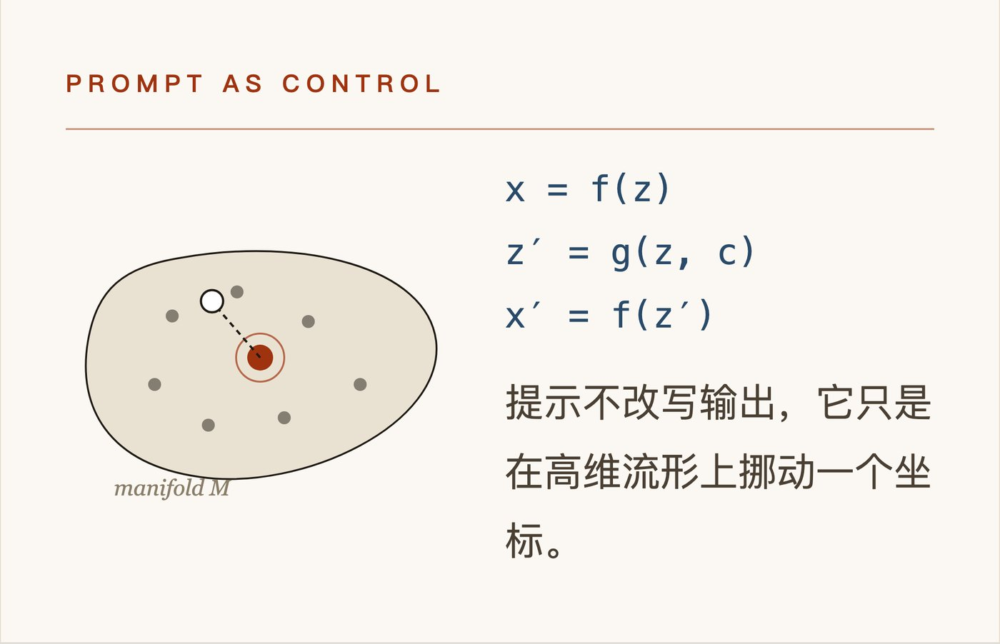
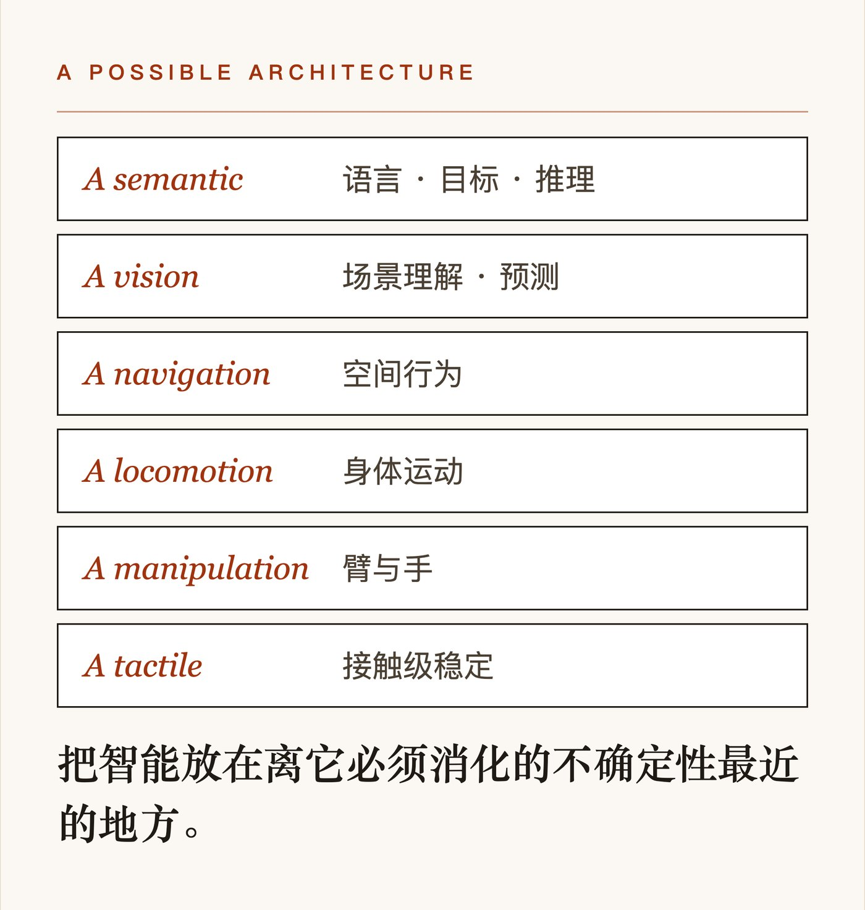
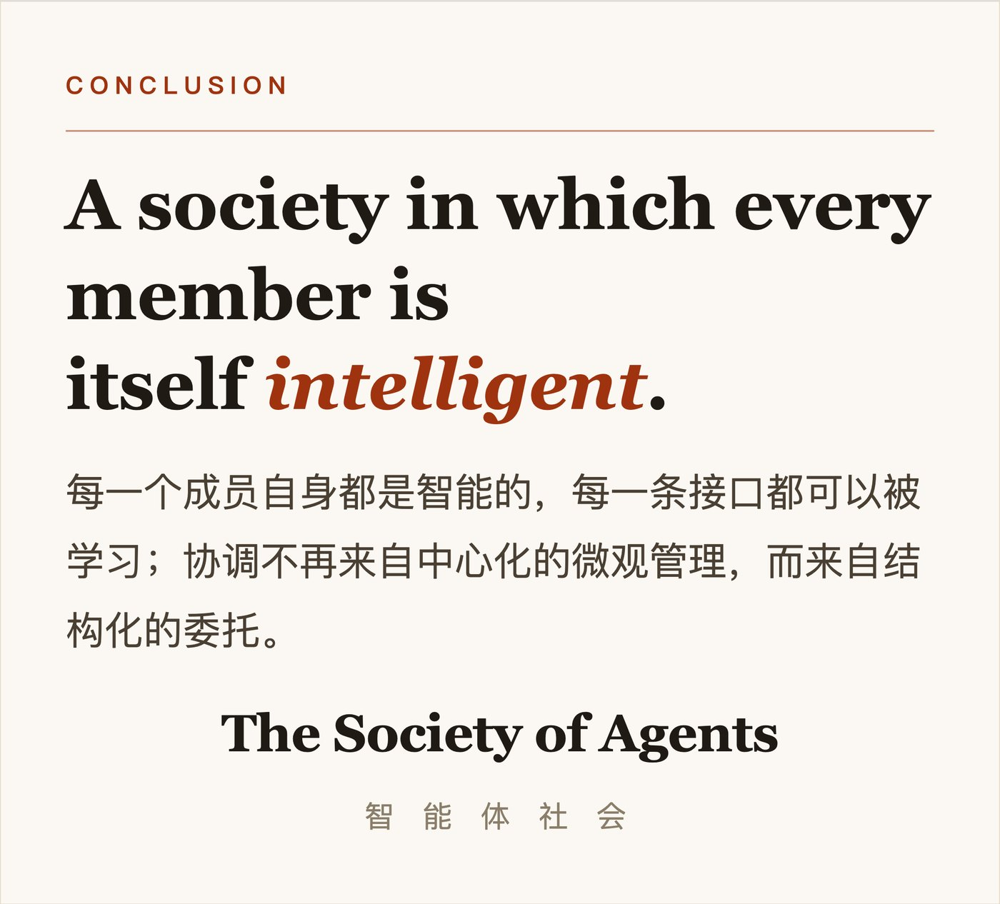

The Society of Agents: How Intelligence Should Be Architected
· · ·
摘要
Abstract
Modern AI has been dominated by an increasingly powerful idea: intelligence can be learned end-to-end. Instead of decomposing cognition into hand-designed symbolic modules, we can train sufficiently large neural networks over sufficiently rich data and allow useful internal structure to emerge.
现代 AI 一直由一种日益强大的观念主导：智能可以被端到端地学习。我们不必再把认知拆解为手工设计的符号模块，而可以训练足够大的神经网络、喂给足够丰富的数据，让有用的内部结构自行涌现。
The success of large language models gives strong evidence for this view.
大语言模型的成功，为这一观点提供了有力证据。
But end-to-end learning does not necessarily imply end-to-end architecture.
但端到端学习并不必然意味着端到端架构。
A system may be trained through gradient descent while still benefiting from a structured organization of intelligence. In fact, biological control, robotics, and current multimodal AI systems all suggest a different possibility:
一个系统可以经由梯度下降来训练，同时仍然受益于智能的结构化组织。事实上，生物控制、机器人学以及当前的多模态 AI 系统，都指向另一种可能：
intelligence may be best organized as a society of semi-autonomous adaptive systems, connected through learned interfaces and coordinated through high-level conditions rather than low-level commands.
智能也许最适合被组织成一个由半自主自适应系统构成的社会，它们通过习得的接口相连，通过高层条件而非低层命令来协调。
In such an architecture, a lower-level agent is not a passive actuator. It is itself an intelligent model, capable of solving a constrained class of problems autonomously. A higher-level agent does not specify every action. It provides goals, conditions, prompts, constraints, or priors.
在这样的架构中，下层智能体不是被动的执行器。它本身就是一个智能模型，能够自主求解一类受限的问题。高层智能体并不规定每一个动作。它给出目标、条件、提示、约束或先验。
This suggests a new interpretation of modular intelligence.
这暗示了对模块化智能的一种新解读。
The important question is no longer:
重要的问题不再是：
Should intelligence be symbolic and modular, or neural and end-to-end?
智能应当是符号化、模块化的，还是神经式、端到端的？
A better question may be:
更好的问题或许是：
How should learned intelligence itself be structured?
学到的智能本身应当如何被组织？
· · ·
1. 从《心智社会》到端到端学习
1. From The Society of Mind to End-to-End Learning

Marvin Minsky's The Society of Mind proposed that what we call intelligence may emerge from the interaction of many smaller cognitive processes.
马文·明斯基的《心智社会》提出，我们所谓的智能，或许源自许多更小的认知过程之间的相互作用。
The historical implementation of this idea was closely associated with symbolic AI. Intelligence was decomposed into explicit functions and rules. Different modules performed different tasks, and their interactions were designed by humans.
这一想法的历史实现与符号 AI 紧密相连。智能被拆解为显式的函数与规则。不同的模块执行不同的任务，它们的交互由人类设计。
Deep learning moved in almost the opposite direction.
深度学习几乎走向了相反的方向。
Instead of explicitly defining the structure of cognition, we learned representations directly from data.
我们不再显式地定义认知的结构，而是直接从数据中学习表征。
GPT pushed this philosophy particularly far.
GPT 把这一理念推得格外远。
Language understanding, factual knowledge, reasoning patterns, planning, style, abstraction, and even rudimentary tool use can coexist within one model trained largely through the same learning objective.
语言理解、事实知识、推理模式、规划、风格、抽象，乃至初步的工具使用，可以共存于同一个模型之中，而它们大体上是通过同一个学习目标训练出来的。
The implication seemed radical:
其含义看似激进：
perhaps intelligence does not need to be architected at all.
也许智能根本无需被架构。
Perhaps scale is the architecture.
也许规模本身就是架构。
But this conclusion may confuse two different ideas.
但这个结论或许混淆了两种不同的想法。
One is:
其一是：
the representations inside an intelligent system should be learned rather than manually specified.
智能系统内部的表征应当是被学习出来的，而非手工指定的。
The other is:
其二是：
all intelligent functions should reside inside a single undifferentiated controller.
所有智能功能都应当栖身于单一、未分化的控制器之内。
The success of the first does not prove the second.
前者的成功并不能证明后者。
· · ·
2. 作为结构化控制的智能
2. Intelligence as Structured Control
Consider intelligence not first as cognition, but as control.
考虑智能时，先别把它当作认知，而把它当作控制。
Any intelligent controller interacts with a particular state space, acts through a particular set of degrees of freedom, and operates at a particular timescale.
任何智能控制器都与某个特定的状态空间交互，通过一组特定的自由度行动，并在某个特定的时间尺度上运作。
These differences matter.
这些差别很重要。
A visual system processes spatial information.
视觉系统处理空间信息。
A locomotion controller manages body dynamics.
行走控制器管理身体动力学。
A hand controller deals with contact forces and dexterity.
手部控制器应对接触力与灵巧性。
A cardiac controller regulates rhythmic physiological activity.
心脏控制器调节有节律的生理活动。
These are not merely different tasks.
它们不只是不同的任务。
They operate over different physical variables, different bandwidths, different uncertainties, and different temporal scales.
它们运作于不同的物理变量、不同的带宽、不同的不确定性以及不同的时间尺度之上。
This suggests that intelligence may naturally decompose according to the systems being controlled.
这暗示，智能或许会沿着被控系统自然地分解。
A controller for visual planning does not need the same internal representation as a controller for millisecond-scale tactile stabilization.
负责视觉规划的控制器，不需要与负责毫秒级触觉稳定的控制器相同的内部表征。
Nor should both necessarily be forced into the same computational loop.
两者也未必都应被塞进同一个计算回路。
The architecture of intelligence may therefore be partly determined by the architecture of the world it controls.
因此，智能的架构或许部分地由它所控制的世界的架构所决定。
· · ·
3. 下层不是执行器
3. The Lower Layer Is Not an Actuator
Traditional hierarchical control often assumes a simple structure:
传统的分层控制常常假定这样一种简单结构：
The lower we move in the hierarchy, the less intelligent the component is assumed to be.
我们在层级中走得越低，被假定的组件就越不智能。
I think this assumption should be reversed.
我认为这个假定应当被反转。
A future intelligent system may instead look like:
未来的智能系统或许更像这样：
where every Aᵢ is itself an adaptive model.
其中每个 Aᵢ 本身都是一个自适应模型。
The lower-level agent is not merely executing commands.
下层智能体不只是执行命令。
It possesses its own model of the problem.
它拥有自己关于该问题的模型。
It has its own learned priors.
它拥有自己习得的先验。
It can reject unstable trajectories, compensate for uncertainty, correct errors, and complete tasks without continuous supervision.
它能拒绝不稳定的轨迹，补偿不确定性，纠正错误，并在没有持续监督的情况下完成任务。
The higher-level agent therefore does not issue complete commands.
因此，高层智能体并不发出完整的命令。
It provides a condition.
它给出的是一个条件。
We can represent this abstractly as
我们可以把它抽象地表示为
where:
其中：
- ✦sₜ is the local state available to the lower-level agent,
- ✦c is a high-level condition supplied by another agent,
- ✦πθ is a learned policy.
- ✦sₜ 是下层智能体可获得的局部状态，
- ✦c 是由另一个智能体提供的高层条件，
- ✦πθ 是一个习得的策略。
The condition c may represent:
条件 c 可以表示：
- ✦a goal,
- ✦a target location,
- ✦a semantic instruction,
- ✦a style,
- ✦a desired velocity,
- ✦a constraint,
- ✦an emotional quality,
- ✦or a task identity.
- ✦一个目标，
- ✦一个目标位置，
- ✦一条语义指令，
- ✦一种风格，
- ✦一个期望速度，
- ✦一个约束，
- ✦一种情绪特质，
- ✦或者一个任务身份。
This is very close to what we already call a prompt.
这与我们已经称之为提示词的东西极为接近。
· · ·
4. 提示作为一种通用的控制接口
4. Prompting as a General Control Interface
Prompting is usually discussed as a peculiarity of language models.
提示通常被当作语言模型的一种特有现象来讨论。
It may be something much more general.
它或许要普遍得多。
A prompt is a low-bandwidth signal that modifies the behavior of a much more complicated adaptive system.
提示是一种低带宽信号，它改变一个复杂得多的自适应系统的行为。
The prompt does not describe the full computation.
提示并不描述全部计算。
It selects or biases a region of behavior that the underlying model already knows how to produce.
它在底层模型本就会产生的行为空间中，选取或偏置某一片区域。
Consider music generation.
想一想音乐生成。
A high-level system may specify:
一个高层系统可以这样指定：
slow, melancholic, orchestral, distant, dreamlike
缓慢、忧郁、管弦乐、遥远、如梦似幻
This instruction does not specify the waveform.
这条指令并不规定波形。
It does not specify each note.
它不规定每一个音符。
It does not specify the exact dynamic envelope of every instrument.
它不规定每件乐器精确的动态包络。
Yet a sufficiently capable music model can map those few semantic variables into millions of audio samples.
然而，一个足够有能力的音乐模型，能把这少数几个语义变量映射成数百万个音频采样。
The complexity is already contained inside the lower-level model.
复杂度早已包含在下层模型的内部。
The prompt merely selects among possible behaviors.
提示只是在可能的行为之间做选择。
We can therefore view hierarchical intelligence as conditional intelligence.
因此，我们可以把分层智能看作条件化智能。
Instead of
不再是
we have
而是

That is a fundamentally different architecture.
这是一种根本不同的架构。
· · ·
5. 委托而非微观管理
5. Delegation Instead of Micromanagement
This leads to what I would call delegated intelligence.
这引出了我所谓的委托式智能。
Suppose the higher-level agent wants a robot to pick up an apple.
假设高层智能体想让一个机器人捡起一个苹果。
A micromanaging architecture would attempt to determine:
采用微观管理的架构会试图确定：
- ✦the trajectory of the shoulder,
- ✦the elbow angle,
- ✦wrist orientation,
- ✦finger configuration,
- ✦contact timing,
- ✦normal force,
- ✦friction margin,
- ✦grip force.
- ✦肩部的轨迹，
- ✦肘部角度，
- ✦手腕朝向，
- ✦手指构型，
- ✦接触时机，
- ✦法向力，
- ✦摩擦裕度，
- ✦抓握力。
A delegated architecture sends something closer to:
委托式架构发出的东西则更接近：
possibly supplemented by an approximate target pose.
可能再辅以一个近似的目标位姿。
The hand-arm agent solves the rest.
其余由手—臂智能体解决。
The difference resembles the difference between commanding an employee and commanding a motor.
这种差别，类似于命令一名员工与驱动一台马达之间的差别。
An employee receives an objective.
员工接收的是一个目标。
A motor receives a voltage.
马达接收的是一段电压。
A sufficiently intelligent sub-agent should be treated more like the former.
一个足够智能的子智能体，应当更像前者那样被对待。
The more competent the lower-level agent becomes, the less information the higher-level system needs to transmit.
下层智能体越有能力，高层系统需要传输的信息就越少。
This creates a powerful principle:
这带来一条强有力的原则：
The intelligence of the subordinate system determines how compressed the interface can be.
下层系统的智能程度，决定了接口可以被压缩到多紧。
· · ·
6. 层级结构即信息压缩
6. Hierarchy as Information Compression
A hierarchical architecture is therefore not merely organizational.
因此，层级式架构不仅仅是一种组织方式。
It is also an information-theoretic device.
它同时也是一种信息论装置。
Suppose a body contains n actuators.
假设一个身体含有 n 个执行器。
A naive centralized controller may need to produce a high-dimensional command
一个朴素的集中式控制器可能需要产生一个高维命令
But if a learned lower-level controller maps a small latent command z to coordinated actuator behavior,
但如果一个已学习的下层控制器能把一个小小的潜命令 z 映射为协调的执行器行为，
then the high-level controller only needs to reason in the lower-dimensional space
那么高层控制器就只需在更低维的空间中推理
Instead of controlling hundreds of variables, the higher layer may only need to specify:
高层无需控制数百个变量，而可能只需指定：
- ✦direction,
- ✦speed,
- ✦target,
- ✦mode,
- ✦urgency.
- ✦方向，
- ✦速度，
- ✦目标，
- ✦模式，
- ✦紧迫性。
Hierarchy compresses control.
层级压缩了控制。
A primitive such as walking can therefore be viewed as a learned decoder from a low-dimensional command space into a high-dimensional motor trajectory.
因此，像行走这样的基元，可以被看作一个从低维命令空间到高维运动轨迹的已学习解码器。
This is one reason biological control is so suggestive.
这正是生物控制如此富有启发性的一个原因。
The brain does not appear to consciously specify every contraction required for locomotion.
大脑似乎并不会有意地指定行走控制所需的每一次肌肉收缩。
Once a motor pattern has been learned, high-level signals can modulate it without reconstructing it from first principles.
一旦某个运动模式已被学会，高层信号就能对它进行调制，而无需从第一性原理出发重建它。
· · ·
7. 不同层应在不同的时间尺度上运行
7. Different Layers Should Operate at Different Timescales

Another reason for hierarchy is latency.
层级存在的另一个原因是延迟。
Different kinds of intelligence operate under different time constraints.
不同种类的智能运行在不同的时间约束之下。
Visual planning often concerns objects that are spatially distant.
视觉规划往往涉及空间上遥远的物体。
There is usually time to:
通常有足够的时间去：
- ✦recognize,
- ✦predict,
- ✦compare,
- ✦plan.
- ✦识别，
- ✦预测，
- ✦比较，
- ✦规划。
Contact dynamics are different.
接触动力学则不同。
Once a hand touches an object, forces change rapidly.
手一旦触碰到物体，力就会迅速变化。
Slip detection and grip stabilization may require much faster feedback.
打滑检测与抓握稳定可能需要快得多的反馈。
Likewise, maintaining balance cannot depend entirely on a slow deliberative process.
同样，维持平衡也不能完全依赖一个缓慢的审慎过程。
This suggests a multi-timescale architecture:
这提示了一种多时间尺度架构：
where τ represents the characteristic reaction time of a layer.
其中 τ 表示某一层的特征反应时间。
A high-level model may reason over seconds.
高层模型可能以秒为量级进行推理。
A locomotion model may update over tens of milliseconds.
行走控制模型可能每几十毫秒更新一次。
A local stabilization controller may operate faster still.
局部稳定控制器可能运行得更快。
Forcing all of these processes through a single inference loop is structurally inefficient.
强行让所有这些过程都经过单一推理回路，在结构上是低效的。
Intelligence should therefore not only be decomposed by function, but also by timescale.
因此，智能不仅应按功能分解，还应按时间尺度分解。
· · ·
8. 视觉即预测，触觉即校正
8. Vision as Prediction, Touch as Correction
Consider reaching for an object.
考虑伸手去够一个物体。
Vision provides an estimate.
视觉给出一个估计。
The object may appear to be:
物体可能看起来位于：
at some approximate location.
某个大致的位置。
But this estimate is uncertain:
但这个估计是不确定的：
The goal of vision is not necessarily to remove ε completely.
视觉的目标未必是彻底消除 ε。
It only needs to reduce uncertainty enough for the motor system to begin.
它只需把不确定性降低到足以让运动系统启动即可。
Vision provides an anticipatory condition.
视觉提供一个预期性的条件信号。
The motor system prepares.
运动系统做好准备。
The hand approaches.
手靠近。
Once contact occurs, new sensory channels become available.
一旦发生接触，新的感觉通道便变得可用。
Touch provides:
触觉提供：
- ✦contact location,
- ✦pressure,
- ✦local geometry,
- ✦friction,
- ✦slip.
- ✦接触位置，
- ✦压力，
- ✦局部几何，
- ✦摩擦，
- ✦打滑。
Proprioception provides:
本体感觉提供：
- ✦joint state,
- ✦muscle tension,
- ✦relative configuration.
- ✦关节状态，
- ✦肌肉张力，
- ✦相对构型。
At that moment, control becomes more local and more precise.
在那一刻，控制变得更加局部、更加精确。
We can think of the process as a transition:
我们可以把这个过程看作一次转移：

The system does not require a single perfect world model.
系统并不需要一个单一而完美的世界模型。
Different subsystems reduce uncertainty at different stages.
不同的子系统在不同阶段降低不确定性。
· · ·
9. 记忆即参数检索
9. Memory as Parameter Retrieval
This also changes how we should think about memory.
这也改变了我们思考记忆的方式。
Suppose I see a familiar object such as a basketball.
假设我看到一个熟悉的物体，比如一个篮球。
The brain need not calculate its expected mass from visual geometry every time.
大脑不必每次都从视觉几何中计算它预期的质量。
Recognition can retrieve a learned prior:
识别可以检索出一个已学习的先验：
where m may represent mass, f frictional characteristics, and d typical dynamics.
其中 m 可能表示质量，f 表示摩擦特性，d 表示典型的动力学。
The visual system therefore does more than estimate geometry.
因此，视觉系统所做的不仅仅是估计几何。
It can activate a previously learned motor prior.
它还能激活一个先前已学会的运动先验。
The action begins from that prior and is corrected by sensory feedback.
动作从该先验出发，并由感觉反馈加以校正。
This explains why practiced action feels fundamentally different from deliberate calculation.
这解释了为什么熟练的动作与刻意的计算感觉上根本不同。
Repeated practice changes the lower-level policy itself.
反复练习改变了下层策略本身。
What is colloquially called “muscle memory” is better understood as learned structure distributed through the motor system.
俗称的“肌肉记忆”，更恰当的理解是分布于运动系统中的已学习结构。
The high-level system eventually needs to say less.
高层系统最终需要说的东西会越来越少。
· · ·
10. 技能即已学习的流形
10. Skill as a Learned Manifold
This brings us to the geometric interpretation.
这就把我们带到了几何解释。
The space of all physically possible outputs is enormous.
所有物理上可能的输出所构成的空间极为巨大。
But valid behavior occupies only a small structured subset.
但有效的行为只占据其中一个小的、有结构的子集。
Consider audio.
以音频为例。
The space of all possible waveforms is vast.
所有可能波形的空间浩瀚无垠。
Most waveforms are not music.
大多数波形并不是音乐。
Music occupies a much smaller structured subset of audio space.
音乐只占据音频空间中一个小得多的、有结构的子集。
Similarly:
类似地：
- ✦grammatical language occupies a subset of possible token sequences;
- ✦stable walking occupies a subset of possible joint trajectories;
- ✦meaningful grasping occupies a subset of possible hand configurations;
- ✦cinematographic video occupies a subset of possible image sequences.
- ✦合乎语法的语言占据可能词元序列的一个子集；
- ✦稳定的行走占据可能关节轨迹的一个子集；
- ✦有意义的抓取占据可能手部构型的一个子集；
- ✦电影式的视频占据可能图像序列的一个子集。
We can think of each of these as a manifold M embedded in a much larger ambient space X:
我们可以把其中每一个都看作嵌入在一个大得多的环境空间 X 中的流形 M：
A specialized agent learns this manifold.
一个专门化的智能体学习这个流形。
Its latent variables provide something analogous to intrinsic coordinates:
它的潜变量提供了某种类似于内蕴坐标的东西：
with a decoder
并配有一个解码器
The agent's expertise consists partly in knowing which outputs belong to M.
该智能体的专业能力，部分就在于知道哪些输出属于 M。
That is why a music model tends to produce music rather than arbitrary noise.
这就是为什么音乐模型倾向于生成音乐，而不是任意的噪声。
Its learned distribution already constrains the possible outputs.
它所学到的分布已经对可能的输出施加了约束。
· · ·
11. 提示是一种坐标层面的干预
11. A Prompt Is a Coordinate-Level Intervention

From this viewpoint, a high-level prompt does not construct the output.
从这个视角看，高层提示并不构造输出。
It moves the system within the learned manifold.
它在已学习的流形内部移动系统。
Suppose
假设
The higher-level system modifies z, directly or indirectly:
更高层的系统直接或间接地修改 z：
Then
那么
The condition c might mean:
条件信号 c 的含义可能是：
- ✦faster,
- ✦sadder,
- ✦move left,
- ✦grasp gently,
- ✦speak formally,
- ✦paint in a particular style.
- ✦更快，
- ✦更悲伤，
- ✦向左移动，
- ✦轻轻抓握，
- ✦正式地说话，
- ✦以某种特定风格作画。
A small semantic change in c may produce an extremely high-dimensional change in x.
c 中一个微小的语义变化，可能会在 x 中产生维度极高的变化。
This is possible because the lower-level model already contains the mapping from intrinsic structure to detailed output.
之所以可能，是因为下层模型已经包含了从内蕴结构到细节输出的映射。
Prompting is therefore a form of low-dimensional control over a high-dimensional learned manifold.
因此，提示是一种对高维已学习流形的低维控制。
This may be one of the deepest architectural ideas revealed by modern generative models.
这可能是现代生成模型所揭示的最深刻的架构思想之一。
· · ·
12. 智能体之间的接口也应是可学习的
12. The Interface Between Agents Should Also Be Learned
If agents possess different internal manifolds, then a fixed hand-designed interface may be unnecessarily restrictive.
如果各智能体拥有不同的内部流形，那么一个固定的、人工设计的接口可能就过于受限。
Suppose Agent A produces representation
假设智能体 A 产生表征
while Agent B accepts condition
而智能体 B 接受条件
We can insert a learned bridge:
我们可以插入一个已学习的桥接器：
The bridge hφ may be:
这个桥接器 hφ 可以是：
- ✦an adapter,
- ✦a projection head,
- ✦a small transformer,
- ✦a learned embedding layer,
- ✦a latent translator.
- ✦一个适配器，
- ✦一个投影头，
- ✦一个小型 transformer，
- ✦一个已学习的嵌入层，
- ✦一个潜空间翻译器。
The important point is that the agents do not need to share the same internal ontology.
关键在于，各智能体无需共享相同的内部本体。
Each can maintain its own representation.
每个智能体都可以维持自己的表征。
Only the interface needs to learn sufficient mutual compatibility.
只有接口需要学会足够的相互兼容性。
This architecture resembles communication between humans.
这种架构类似于人类之间的交流。
Two people do not share identical neural representations.
两个人并不共享完全相同的神经表征。
They only require a communication channel rich enough to transmit useful intent.
他们只需要一条足够丰富、能传递有用意图的通信信道。
· · ·
13. 接口应是柔性的，而非精确的
13. Interfaces Should Be Soft, Not Exact
Traditional software engineering values exact interfaces.
传统软件工程看重精确的接口。
A function receives an input of a known type and returns a precisely specified output.
一个函数接收已知类型的输入，并返回精确指定的输出。
Intelligent systems may require a different philosophy.
智能系统可能需要一种不同的哲学。
Their interfaces may be probabilistic.
它们的接口可以是概率性的。
A command does not need to specify everything.
一条命令无需指定一切。
It may define a distribution:
它可以定义一个分布：
rather than a deterministic mapping.
而非一个确定性的映射。
This apparent imprecision is not necessarily a weakness.
这种表面上的不精确未必是弱点。
It works because the receiving agent can interpret incomplete information using its own learned model.
它能奏效，是因为接收方智能体可以借助自己已学习的模型来解读不完整的信息。
The smarter the receiving agent, the less explicit the interface needs to be.
接收方智能体越聪明，接口需要越不显式。
This suggests an inversion of conventional engineering:
这提示了对传统工程的一种倒转：
In traditional systems, reliability comes from precise interfaces.
在传统系统中，可靠性来自精确的接口。
In intelligent systems, reliability may increasingly come from capable endpoints.
在智能系统中，可靠性可能越来越多地来自有能力的端点。
· · ·
14. 预训练学习流形
14. Pretraining Learns the Manifold
We can now reinterpret pretraining.
我们现在可以重新解读预训练。
At a high level, pretraining learns the structure of possible behavior.
在高层面上，预训练学习的是可能行为的结构。
For a language model, it learns which continuations are linguistically and semantically plausible.
对语言模型而言，它学到的是哪些续写在语言上和语义上是合理的。
For a music model, it learns musical structure.
对音乐模型而言，它学到的是音乐结构。
For a motor model, it learns feasible dynamics and useful coordination.
对运动模型而言，它学到的是可行的动力学和有用的协调。
We can loosely describe this as learning a manifold:
我们可以粗略地把这描述为学习一个流形：
Pretraining therefore answers:
因此，预训练回答的是：
What kinds of states or behaviors exist?
存在哪些种类的状态或行为？
It creates the repertoire.
它创造了储备库。
It learns the space of possibilities.
它学习可能性的空间。
· · ·
15. 后训练作为度量塑造
15. Post-Training as Metric Shaping
Post-training can then be interpreted differently.
后训练则可以作另一种解读。
Suppose pretraining gives us a manifold M.
假设预训练给了我们一个流形 M。
Not every point on that manifold is equally desirable.
并非流形上的每个点都同样可取。
Some responses are:
有些回答是：
- ✦more helpful,
- ✦safer,
- ✦more accurate,
- ✦more elegant,
- ✦more aligned with a task.
- ✦更有帮助的，
- ✦更安全的，
- ✦更准确的，
- ✦更优雅的，
- ✦更贴合任务的。
We therefore need a notion of preference over the manifold.
因此，我们需要一个关于流形的偏好概念。
One way to think about this is to introduce a reward function:
一种思考方式是引入奖励函数：
But geometrically, we can go further.
但从几何上看，我们可以走得更远。
Post-training can be viewed as modifying the effective metric or potential landscape over M.
后训练可以被视为修改 M 上有效的度量或势能景观。
In ordinary geometry, a metric
在通常的几何中，一个度量
determines how distance is measured locally.
决定距离如何在局部被度量。
In an intelligent system, we may use “metric” somewhat more broadly: as the learned structure that determines which directions, trajectories, or states are easy, costly, attractive, or undesirable.
在智能系统中，我们可以更宽泛地使用“度量”：把它视为一种学到的结构，它决定哪些方向、轨迹或状态是容易的、代价高昂的、有吸引力的或不可取的。
Post-training reshapes this geometry.
后训练重塑这一几何。
Two states that were equally accessible after pretraining may no longer be equally preferred.
预训练后同样可达的两个状态，可能不再同样地被偏好。
A policy is encouraged to move toward one and away from another.
策略被鼓励朝向其中一个、远离另一个。
In this interpretation:
在这种解读下：
pretraining learns the space; post-training reshapes how the system moves through the space.
预训练学习空间；后训练重塑系统如何在空间中移动。
Or more simply:
或者更简单地说：
pretraining determines what is possible; post-training determines what is preferred.
预训练决定什么是可能的；后训练决定什么是被偏好的。
This is not a literal claim that RLHF explicitly estimates a Riemannian metric tensor.
这并不是在字面上声称 RLHF 显式地估计了一个黎曼度量张量。
Rather, it is a useful geometric abstraction.
相反，它是一种有用的几何抽象。
Reward shaping, preference optimization, instruction tuning, and reinforcement learning all modify the effective geometry of behavior.
奖励塑造、偏好优化、指令微调和强化学习，都在修改行为的有效几何。
· · ·
16. 智能体 = 流形 + 度量 + 接口
16. An Agent as Manifold + Metric + Interface
This suggests a compact abstraction for an intelligent agent.
这提示了一个关于智能体的紧凑抽象。
An agent can be described by three major components:
一个智能体可由三大组成部分来描述：
where:
其中：
- ✦M is the learned space of possible behavior,
- ✦g is the learned preference or control geometry over that space,
- ✦I is the interface through which other agents condition the system.
- ✦M 是学到的可能行为空间，
- ✦g 是该空间上学到的偏好几何或控制几何，
- ✦I 是其他智能体借以对系统施加条件的接口。
We may add a local state estimator S:
我们还可以加入一个局部状态估计器 S：
Then a society of agents becomes a graph:
于是，智能体的社会就成了一个图：
where each vertex
其中每个顶点
is an autonomous intelligent subsystem, and each edge
是一个自主的智能子系统，而每条边
is a learned communication interface.
是一个学到的通信接口。
The full intelligence of the system does not live in any single node.
系统的完整智能并不存在于任何单个节点之中。
It emerges from:
它涌现于：
*1. the capabilities of each agent,
- Ⅰ.the topology of the graph,
- Ⅱ.the bandwidth of the interfaces,
- Ⅲ.the division of timescales,
- Ⅳ.the mechanism of delegation.*
- Ⅰ.每个智能体的能力，
- Ⅱ.图的拓扑结构，
- Ⅲ.接口的带宽，
- Ⅳ.时间尺度的划分，
- Ⅴ.委托的机制。
This is a fundamentally architectural view of intelligence.
这是一种从根本上属于架构层面的智能观。
· · ·
17. 智能体的社会
17. The Society of Agents
We can now return to Minsky.
现在我们可以回到 Minsky。
The central insight of The Society of Mind may survive even if the symbolic implementation does not.
《心智社会》的核心洞见或许能够留存，即便其符号主义的实现方式不能。
Intelligence may indeed be a society.
智能也许确实是一个社会。
But the members of that society need not be simple symbolic rules.
但这个社会的成员不必是简单的符号规则。
Each member can itself be a learned neural system.
每个成员本身都可以是一个学到的神经系统。
A vision agent may contain billions of parameters.
一个视觉智能体可能包含数十亿个参数。
A language agent may contain billions more.
一个语言智能体可能再包含数十亿个。
A locomotion agent may be trained on enormous amounts of simulation and real-world experience.
一个行走控制智能体可能在海量仿真和真实世界经验上接受训练。
A dexterous hand agent may learn its own dynamics, tactile priors, and manipulation strategies.
一个灵巧手智能体可能学到自己的动力学、触觉先验和操作策略。
A music agent may internalize a vast manifold of musical structure.
一个音乐智能体可能内化一个庞大的音乐结构流形。
None of them needs to understand the internal representation of the others.
它们之中没有一个需要理解其他成员的内部表征。
They only need to communicate.
它们只需要通信。
· · ·
18. 智能作为自适应委托
18. Intelligence as Adaptive Delegation
The key architectural relation is therefore not command.
因此，关键的架构关系不是命令。
It is delegation.
而是委托。
An upper-level agent says:
上层智能体说：
Here is what matters.
要紧的是这个。
The lower-level agent determines:
下层智能体则决定：
Here is how to do it.
做法是这个。
The higher layer retains the ability to modulate:
更高层保留了调制的权力：
- ✦goals,
- ✦priorities,
- ✦constraints,
- ✦style,
- ✦urgency,
- ✦context.
- ✦目标，
- ✦优先级，
- ✦约束，
- ✦风格，
- ✦紧迫性，
- ✦上下文。
But it does not destroy the autonomy of the lower layer.
但它并不摧毁下层的自主性。
This is analogous to good organizational design.
这与良好的组织设计类似。
A CEO who must personally specify every action of every employee does not run an intelligent organization.
一个必须亲自规定每位员工每一个动作的 CEO，并不能经营一个智能的组织。
A competent organization works because local units possess competence.
一个称职的组织之所以运转，是因为局部单元拥有能力。
The same may be true of artificial intelligence.
人工智能或许也是如此。
· · ·
19. 为什么一个社会可能比一个单体扩展得更好
19. Why a Society May Scale Better Than a Monolith
As models become more capable, a monolithic architecture faces several problems.
随着模型能力增强，单体式架构会面临若干问题。
First, timescale conflict.
第一，时间尺度冲突。
Long-horizon reasoning and fast reflexive control require different computational regimes.
长跨度推理与快速反射式控制需要不同的计算体制。
Second, representation conflict.
第二，表征冲突。
The best latent representation for language may not be the best one for tactile stabilization.
对语言而言最佳的潜表征，未必是对触觉稳定而言最佳的那一个。
Third, training conflict.
第三，训练冲突。
Optimizing one behavior may interfere with another.
优化一种行为可能干扰另一种行为。
Fourth, physical locality.
第四，物理局部性。
Some controllers must operate near the sensors and actuators they control.
有些控制器必须在其所控制的传感器和执行器附近运行。
Fifth, bandwidth.
第五，带宽。
It is inefficient to transmit raw high-dimensional states when a compressed semantic condition is sufficient.
当压缩后的语义条件已经足够时，传输原始高维状态是低效的。
A society of agents addresses these problems by allowing specialization without sacrificing coordination.
智能体的社会通过允许专门化而不牺牲协调，来解决这些问题。
· · ·
20. 一种可能的架构
20. A Possible Architecture

A future robot, for example, might contain:
例如，一个未来的机器人可能包含：
for language, goals, and reasoning;
用于语言、目标和推理；
for scene understanding and prediction;
用于场景理解与预测；
for spatial behavior;
用于空间行为；
for body movement;
用于身体运动；
for arm and hand control;
用于手臂和手的控制；
for contact-level stabilization.
用于接触层面的稳定。
The semantic agent may say:
语义智能体可能会说：
Pick up the red apple.
拿起那个红苹果。
The visual agent determines:
视觉智能体确定：
Target approximately here.
目标大约在这里。
The manipulation agent decides:
操作智能体决定：
Use this reach and grasp strategy.
采用这种伸手和抓取策略。
The tactile agent decides:
触觉智能体决定：
Increase grip force; slip detected.
增加抓握力；检测到打滑。
The high-level system does not need to participate in every correction.
高层系统不需要参与每一次修正。
The hierarchy behaves intelligently because intelligence exists at every layer.
这一层级结构之所以表现得智能，是因为每一层都存在智能。
· · ·
21. 设计原则
21. The Design Principle
This leads to a design principle for future AI:
这引出一条面向未来 AI 的设计原则：
Place intelligence as close as possible to the uncertainty it must resolve.
把智能尽可能放到它必须解决的那种不确定性近旁。
Visual uncertainty should be handled by vision.
视觉的不确定性应由视觉处理。
Contact uncertainty should be handled by tactile control.
接触的不确定性应由触觉控制处理。
Motor uncertainty should be handled by motor intelligence.
运动的不确定性应由运动智能处理。
Semantic uncertainty should be handled by higher-level reasoning.
语义的不确定性应由更高层推理处理。
Do not move every uncertainty to the top of the hierarchy.
不要把每一种不确定性都推给层级结构的顶端。
That only increases bandwidth, latency, and complexity.
那只会增加带宽、延迟和复杂性。
Instead, allow each level to solve the uncertainties native to its own domain.
相反，让每一层去解决它自己领域内固有的不确定性。
· · ·
22. 结论
22. Conclusion
The success of deep learning taught us that intelligence should not be manually decomposed into rigid symbolic rules.
深度学习的成功告诉我们，智能不应被手工地分解为僵硬的符号规则。
But it does not follow that intelligence should be architecturally monolithic.
但并不能由此推出，智能在架构上就应当是单体式的。
The next step may be to combine the strongest lesson of deep learning with the strongest insight of The Society of Mind.
下一步也许是把深度学习最有力的教训，与《心智社会》最深刻的洞见结合起来。
The representations should be learned.
表征应当是学到的。
The modules should be adaptive.
模块应当是自适应的。
The interfaces should be trainable.
接口应当是可训练的。
The lower layers should be autonomous.
下层应当是自主的。
The hierarchy should communicate through compact semantic conditions.
层级结构应当通过紧凑的语义条件来通信。
Different agents should operate at different temporal and representational scales.
不同的智能体应当以不同的时间尺度和表征尺度运行。
From this perspective, the future of AI may not be a single universal model controlling everything directly.
从这个视角看，AI 的未来也许不是一个直接控制一切的单一通用模型。
It may be a network of powerful learned models, each occupying its own manifold of competence.
它可能是一个由强大的学习模型构成的网络，每个模型都占据着属于自己能力的流形。
Higher-level intelligence would not control lower-level intelligence by issuing detailed commands.
高层智能不会通过发出细致命令来控制低层智能。
It would shape it through prompts, conditions, goals, and learned interfaces.
它会通过提示、条件、目标和学到的接口来塑造它。
Pretraining would learn the manifold.
预训练将学习流形。
Post-training would shape the effective metric over that manifold.
后训练将塑造流形上的有效度量。
Interfaces would translate between manifolds.
接口将在流形之间翻译。
And intelligence as a whole would emerge from adaptive delegation across layers.
而智能作为一个整体，将从跨层的自适应委托中涌现。
The central architectural question would therefore change.
因此，核心的架构问题将发生变化。
Not:
不再是：
How large should the model be?
模型应该有多大？
But:
而是：
Where should intelligence live, how autonomous should each layer be, and what is the minimum information one intelligent system must send to another?
智能应当居于何处，每一层应当有多自主，以及一个智能系统必须向另一个智能系统发送的最少信息是什么？
Minsky called it a Society of Mind.
Minsky 称它为《心智社会》。
For modern AI, perhaps the more useful formulation is:
对现代 AI 而言，也许更有用的表述是：
· · ·
智能体的社会
The Society of Agents
A society in which every member is itself intelligent, every interface can be learned, and coordination emerges not from centralized micromanagement, but from structured delegation.
一个社会，其中每个成员本身都是智能的，每个接口都可以被学习，而协调并非源自集中式的微观管理，而是源自结构化的委托。
